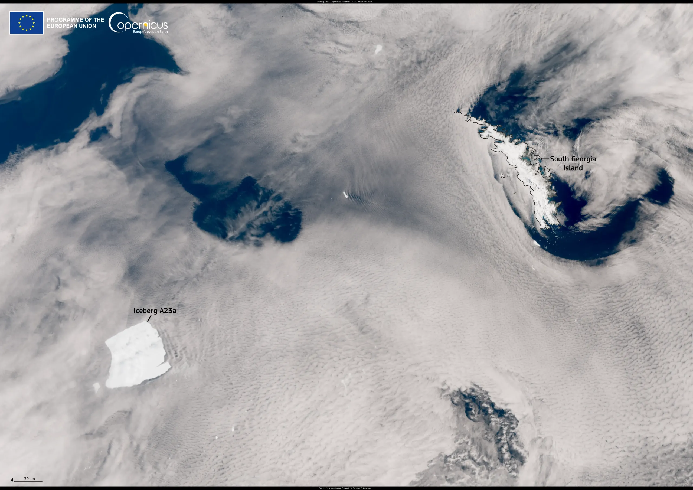
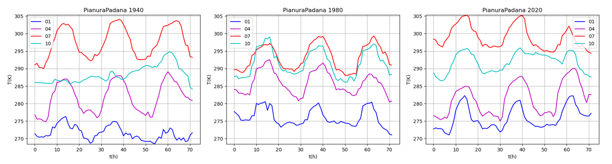
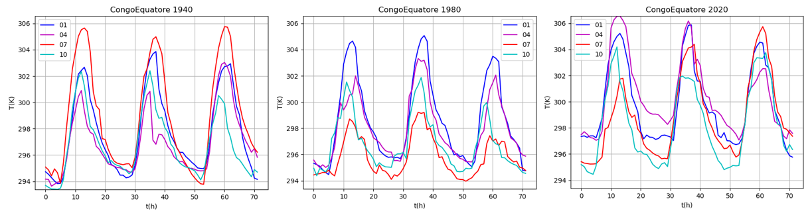
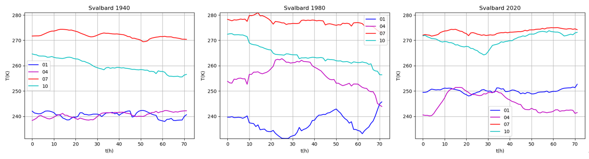
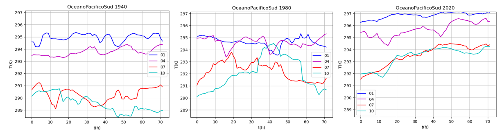
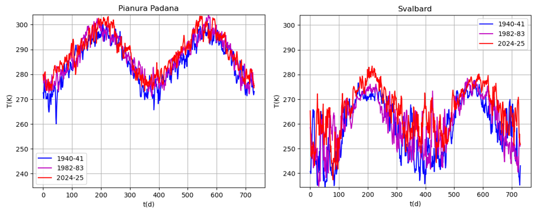
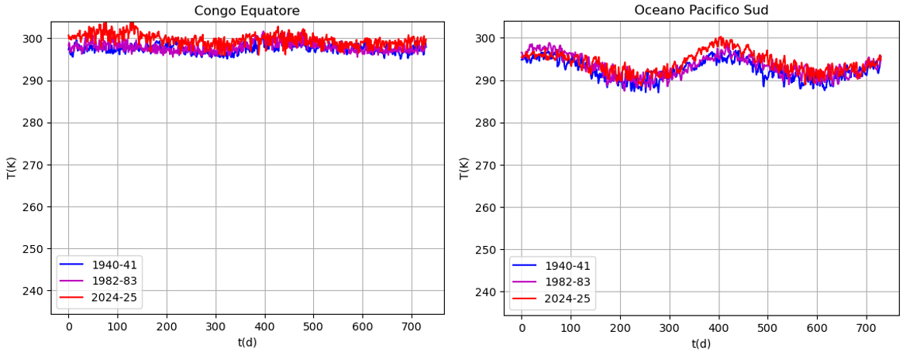
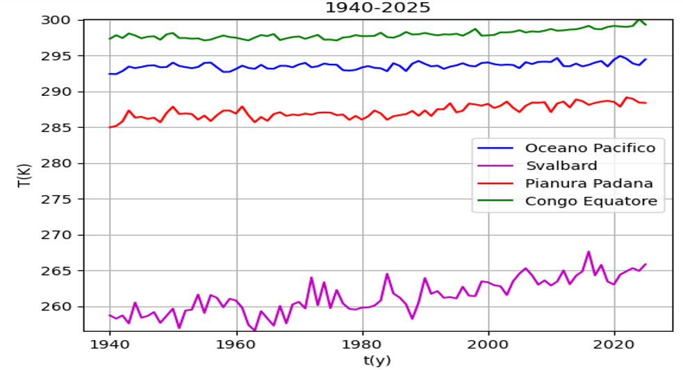
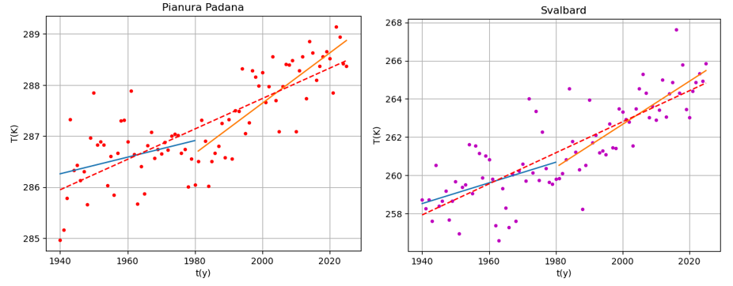
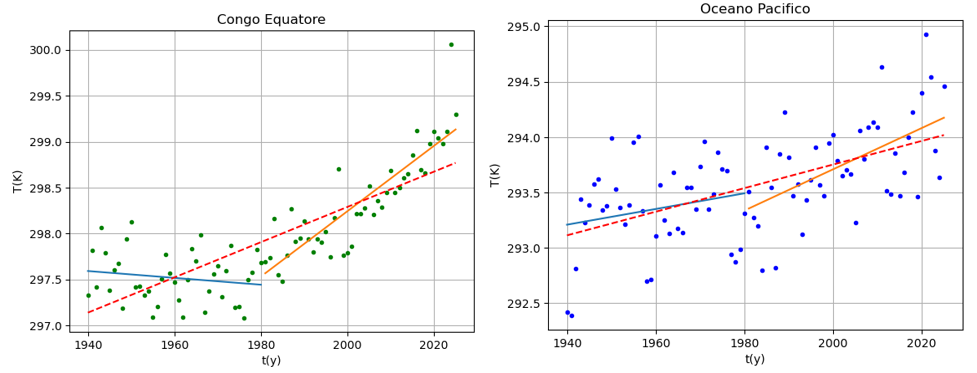

Fa davvero più caldo?
A23a è scomparso nel luglio 2026.
Era stato più volte il più grande del mondo, da quando nel 1986 si era staccato dal suo luogo d'origine, la piattaforma glaciale Filchner in Antartide. Per trent'anni era rimasto in prossimità del paese natale, in acque fredde, mentre alcuni suoi compagni, come gli iceberg A22 e A24, erano subito migrati, riducendosi rapidamente. Poi ha cominciato a muoversi verso l'Atlantico: nell'immagine sotto, ripreso da uno dei satelliti Sentinel-3 del programma Copernicus il 12 dicembre 2024 si vede l'iceberg quando si trovava a 400 km dall'isola della Georgia del Sud.
Aveva un'estensione di circa 3700 chilometri quadrati, più della valle d'Aosta. Si ergeva per 40 metri sopra il livello del mare e 400 sotto. Gli iceberg si sono sempre formati e sciolti, ma la velocità con cui accade oggi non ha paragoni nella storia recente. Dedichiamo ad A23a lo studio delle temperature negli ultimi 85 anni
Cominciamo con l’analizzare i dati su tre giorni. Nei gbrafici sotto i valori "01", "04", "07" e "10" nella legenda si riferiscono al mese di osservazione (rispettivamente gennaio, aprile, luglio e ottobre). I grafici relativi alla Pianura Padana e alla zona equatoriale del Congo mostrano un andamento periodico con periodo di 24 ore, riconducibile alla variazione di temperatura dovuta all’alternarsi del giorno e della notte.


Osserviamo che in entrambe le località l’escursione termica nell’arco delle 24 ore è approssimativamente di 10 °C.
Inoltre nei grafici della pianura Padana si evidenzia una marcata differenza dovuta alla stagione che invece non appare nei grafici del Congo; nella fascia equatoriale infatti le stagioni non presentano variazioni apprezzabili di temperatura.
Osserviamo ora i grafici di tre giorni relativi alle isole Svalbard e all’Oceano Pacifico meridionale. In questi grafici non si osserva la periodicità di 24 ore, anche se per motivi diversi.


Alle isole Svalbard, che si trovano ad alta latitudine, il sole rimane basso sull’orizzonte anche nelle ore centrali della giornata e d’estate non tramonta per mesi, o viceversa d’inverno non sorge per mesi; a questo si aggiunge l’effetto mitigatore dell’acqua per cui le variazioni di temperatura sono dominate da altre cause, come il vento o la nuvolosità.
Nel mezzo dell’oceano Pacifico invece la causa prevalente è l’alto calore specifico dell’acqua che mitiga tutte le variazioni di temperatura. Nei grafici dell’oceano Pacifico meridionale si osserva anche l’inversione delle stagioni caratteristica dell’emisfero australe: più freddo in luglio e ottobre, più caldo in gennaio e aprile.
Esaminiamo ora i dati relativi a due anni consecutivi. I grafici delle quattro località sono rappresentati con la stessa scala, per facilitare i confronti.


Nei grafici della Pianura Padana, delle isole Svalbard e dell’oceano Pacifico è visibile una periodicità di 12 mesi, relativa all’alternanza delle stagioni. Si può osservare nella pianura Padana l’escursione tra estate e inverno è approssimativamente di 30 °C, alle Svalbard di 40 °C, mentre nell’Oceano Pacifico è di soli 10 °C e all’equatore inesistente; inoltre le oscillazioni nell’Oceano Pacifico sono sfasate di sei mesi rispetto alle altre, sempre per il diverso andamento delle stagioni nell’emisfero australe.
Rivolgiamoci infine al grafico che rappresenta l’evoluzione delle medie annuali su un arco di 85 anni. Prima rappresentiamo i dati in un unico grafico per paragonarli meglio, poi in grafici separati per seguirne meglio la dinamica

Poiché nei grafici singoli si osserva un cambiamento di pendenza, cioè un aumento della velocità di riscaldamento, dopo il 1980, per ogni grafico rappresentiamo anche la retta di regressione su tutti i dati (rossa tratteggiata) e separatamente sul periodo 1940-1980 (blu) e 1981-2025 (arancione). Nella tabella successiva riportiamo le pendenze delle rette rappresentate in °C/anno.


| Rapidità di riscaldamento (°C/anno) | |||
|---|---|---|---|
| 1940-2025 | 1940-1980 | 1981-2025 | |
| Pianura Padana | 0.03 | 0.016 | 0.05 |
| Svalbard | 0.08 | 0.05 | 0.1 |
| Congo equatore | 0.02 | -0.004 | 0.036 |
| Oceano Pacifico | 0.01 | 0.007 | 0.02 |
Le rette di regressione e la tabella evidenziano il fatto che nonostante le variazioni su lunghi periodi siano molto più piccole delle escursioni giornaliere e stagionali sono significative e apprezzabili. Inoltre c’è stata un’accelerazione nel riscaldamento: in tutte le località la rapidità di riscaldamento nel periodo 1981-2025 è stata maggiore che nel periodo 1940-1980 (circa tre volte, a parte il Congo in cui nel primo periodo c’era stato un lieve calo della temperatura). Si osserva inoltre che il riscaldamento alla Svalbard, cioè nel Circolo Polare Artico, è molto più rapido che all’equatore o alle latitudini intermedie: secondo gli ultimi dati la temperatura sta crescendo di un grado °C ogni dieci anni.